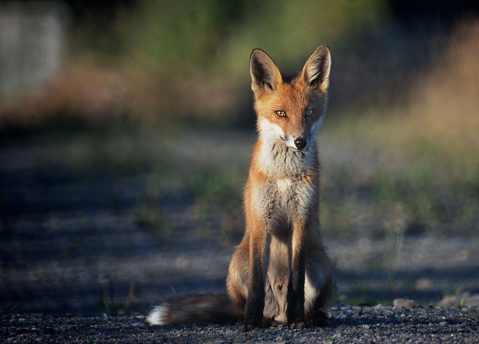

All About Foxes
Fox is a common name for many species of alert omnivorous mammals belonging to the Canidae family. Foxes are small-to-medium-size canids (slightly smaller than a medium-size domestic dog), with a flattened skull, upright triangular ears, a pointed, slightly upturned snout, and a long bushy tail (or brush).
Species of Fox
Members of about 37 species are referred to as foxes, of which only 12 species actually belong to the Vulpes genus of "true foxes". By far the most common and widespread species of fox is the red fox (Vulpes vulpes), although various species are found on almost every continent. The presence of fox-like carnivores all over the globe, together with their widespread reputation for cunning, has contributed to their appearance in popular culture and folklore in many societies around the world (see also Foxes in culture). The hunting of foxes with packs of hounds, long an established pursuit in Europe, especially the British Isles, was exported by European settlers to various parts of the New World.
Life of a Fox
In the wild, foxes can live for up to 10 years, but most foxes only live for 2 to 3 years due to hunting, road accidents and diseases. Foxes are generally smaller than other members of the family Canidae such as wolves, jackals, and domestic dogs. Male foxes are called reynards, and weigh, on average, around 5.9 kilograms (13 lb) while female foxes, called vixens, weigh less, at around 5.2 kilograms (11.5 lb).Fox-like features typically include a distinctive muzzle (a "fox face") and bushy tail. Other physical characteristics vary according to habitat. For example, the fennec fox (and other species of fox adapted to life in the desert, such as the kit fox) has large ears and short fur, whereas the Arctic fox has tiny ears and thick, insulating fur. Another example is the red fox, which has a typical auburn pelt, the tail normally ending with white marking. Litter sizes can vary greatly according to species and environment – the Arctic fox, for example, has an average litter of four to five, with eleven as maximum.
